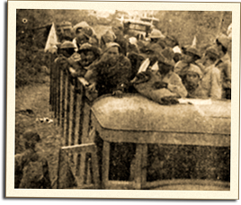

|
j
a v a s c r i p t |
April 15, 1942

POWs
At 1400 today, on this hottest day of the year, Maurice saw a truck carrying a few American prisoners. Shaking his head, he said he could count the bones on their ribs. I thought it odd and forgot it. Well, at 1730 on the way home, I passed by Bilibid Prison and saw a huge mob of people, undoubtedly friends and relatives of some prisoners. The guards chased them off twice in the five minutes I bicycled around, using clubs on one occasion, which explained the swift flight of the crowd. I only caught a glimpse of a few soldiers inside, but on Quezon Avenue I ran into a truck carrying 11 Americans and got a shock. Five of them didn't even have a shirt on their backs — and you could count the ribs on each one! Furthermore, the men looked drowsy and exhausted — as if they hadn't eaten for four days. I got a good look as the truck was stopped. They were too tired to look around and didn't notice my discreet signals. A picture in La Vanguardia shows American and Filipino prisoners sitting separate from each other. The Filipinos carry knapsacks or belongings, the Americans carried nothing though they were at least wearing helmets and military shirts. All the POWs seen in Manila so far were bareheaded and shirtless or in rags. Today, a Filipino with a wild shock of wooly hair walked into our store at around 1500 to buy some fine dresses and materials for his family. He had been a civilian driver at Bataan for the army, utilizing his own personal truck. He was stuck there, given a uniform at the start of the siege, and spent his time carrying supplies. They gave him a grenade to destroy his truck but he ran out of time while getting out of his uniform. He got by as a civilian refugee and is now waiting for a pass to rejoin his family in the provinces. He told us many POWs were marched north from Bataan, and described how he saw several American soldiers, hands tied behind their backs, collapsed in the lines due to exhaustion and starvation. "These damn Japs will never win the war," he exclaimed, "they're savages!" He didn't know Joe though he was under Gen. Parker — "a very nice man, we liked him." Cu dropped in to tell us he heard that Joe was sent to Cebu, adding a new wrinkle. Well, Cebu saw some street fighting before falling yesterday — burned to the ground, in fact! The Japanese are making a mistake in pursuing the propaganda line that Americans mistreated Filipinos. They are being unduly harsh on American POWs as a way of expressing sympathy for the Filipinos and anger at the Americans just to reinforce the propaganda line. Today, the papers quoted Homma saying American troops were inferior to the Japanese, which only provoked a lot of wise smiles at the Escolta. We expected no less. |
|
|
|
|